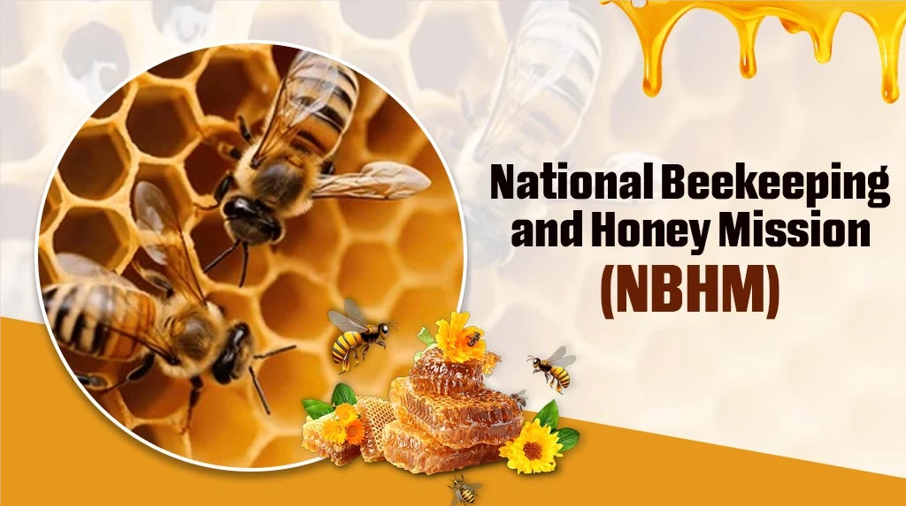

National Beekeeping and Honey Mission (NBHM) is a central government scheme launched by the Ministry of Agriculture and Farmers Welfare and aims to promote professional beekeeping in India. It's a move to bring "Sweet Revolution" In India by providing adequate support and guidance to farmers engaged in beekeeping.
○ Beneficiaries can get financial support, Awareness about modern beekeeping techniques, subsidiaries, andvmarket linkage.
○ It provides 100% financial assistance for the public sector and 50% of the total set-up cost up to INR 3 Lakh per project.
○ Assistance will be released in three installments of 50%, 25% & 25% of the total fund in three years.
○ Bee Breeders can get up to Rs. 5 lakhs/ per project..
○ INR 750 lakhs per IBDC is allotted for the development of regional research centers.
○ INR up to 800.00 lakhs per lab is awarded for the setting of testing labs and INR 100.00 lakhs per lab for the district-level testing lab.
○ INR 20,000/- per women-only group.
○ Eligibility varies according to the category. For instance, Women groups should have a women workforce from SCs/ ST categories and bee breeders should be able to manage a minimum of 2000 quality bee colonies per year to avail of the applicable benefits.
○ Farmers, FPOs, self-help groups, cooperatives, FPOs, and entrepreneurs involved in scientific beekeeping and related activities.